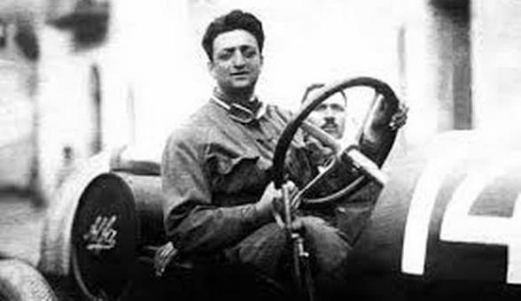

HISTÓRIA DA FERRARI
A história da Ferrari começa antes de existir um único carro com esse nome. Ela começa com Enzo Ferrari, nascido em Modena em 1898 , que se apaixonou pelas corridas ainda jovem e, nos anos 1920, passou a competir como piloto da Alfa Romeo. Foi nas pistas que ele descobriu que seu talento estava menos ao volante e mais na organização de equipes e na busca pela máquina perfeita
“Não se pode descrever a paixão;
só se pode vivê-la.”

[Foto de Enzo Ferrari · crédito · licença]
UMA EQUIPE ANTES DE UMA FÁBRICA
Em 1929, Enzo fundou em Modena a Scuderia Ferrari. A ideia era dar apoio a pilotos particulares que corriam com carros da Alfa Romeo , cuidando da preparação das máquinas e da inscrição nas provas. “Scuderia” é uma palavra italiana que significa “estábulo” e é usada para equipes de corrida, o que combina bem com o símbolo que viria a se tornar famoso. Com o tempo, a Scuderia passou a ser a principal equipe de competição da Alfa Romeo nos anos 1930. Esse período formou a base do que seria a Ferrari: pessoas que entendiam de velocidade e de mecânica , e um líder obcecado por vencer.